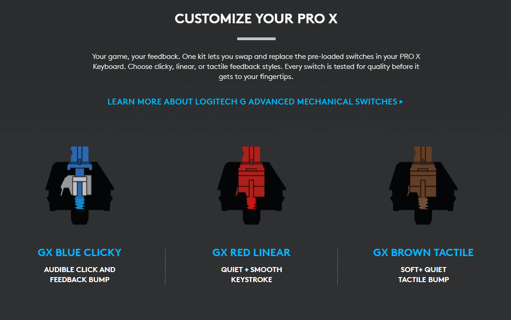
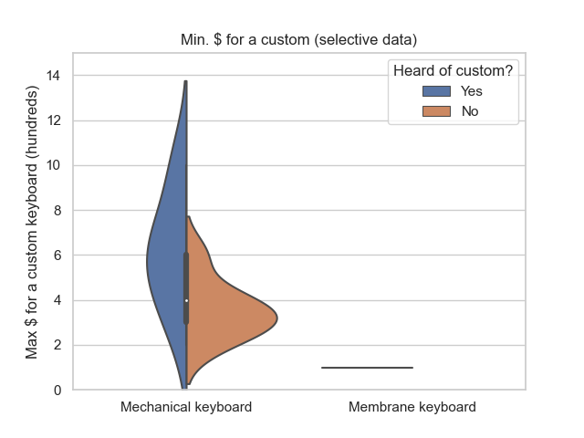
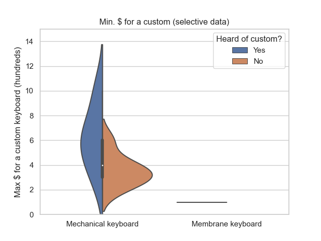
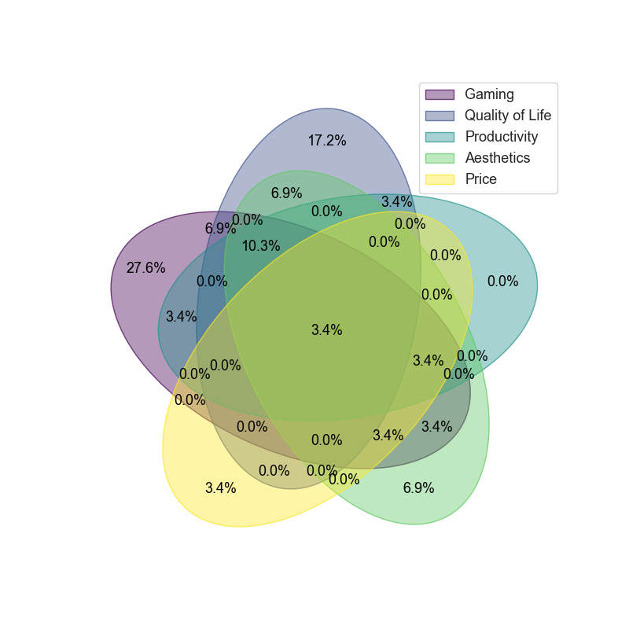

July 12, 2022
Introduction
In the 2010s, there was a consensus around mechanical keyboards that linear switches were designed for gaming and tactile/clicky switches were made for a better typing experience. This was evident when the Cherry MX Red linear switch was first revealed in 2008 and was introduced to focus on the gaming market as a lighter version of the MX Black, cutting the actuation force by 25% (60g to 45g). However, the marketing on these switches has since slowly started to switch towards the promotion of the keyboard itself as a gaming product. Switches are no longer marketed individually as “gaming” or “typing”, but rather as different options available to the customer. This can be seen in Logitech’s marketing, where they state the difference between the switches and put them all under the umbrella of a “gaming” switch.
The primary goal of this project was to first see if this statement remained true; that linears were preferred by gamers and tactiles for the typing experience. So, I created a survey to try and look for any additional correlations around switch choice and to hopefully visualize some of the data gathered. A lot of what’s in this project is theoretical and although the data gathered here isn’t the best, I hope to introduce some data visualization and analysis with keyboards.
For those unfamiliar with mechanical keyboard switches, this is a brief expalantion of mechanical switches: Tactile switches will have a small bump somewhere in the middle of a press indicating the switch has been actuated. Linear switches feel the same until you bottom out, which is when you press the switch in all the way (meaning no feedback as to when the switch actuates). Clicky switches are very similar to tactiles, however have a clicking mechanism that creates a much more audible sound when you actuate the switch.
Gathering Data
The survey was sent through Google Forms, asking questions regarding the time spent, swithces used, purchase reasoning, and more.
There were two renditions of the form, I modified the first because some of the questions did not give me data in a format that was quantifiable, and others were noted as confusing or difficult to answer. I revised the form to have answers compatible with the previous rendition of the form, and removed any questions that were redundant towards the goals of the project (not keyboard-related). More details on revisions below and in the data section further. Here were the pieces of data I wanted to gather from each question:
| Question | Data Gathered |
|---|---|
| What type of keyboard do you use? | Understand type of entries in the sample, separate mechanical users from laptop/membrane users |
| What type of switch do you use/prefer? | Further divide each entry into different groups |
| Reasons behind purchase of keyboard? | To find any correlation between keyboard and purchase reasoning |
| Time spent on computer? | Understanding priorities of user - if more time spent towards gaming or work-related activites |
| Have you heard of custom keyboards? - revised to (a JWK switch?) | Group entries based off familiarity with custom keyboard market. Revised (see in data) |
| Price range for a custom keyboard? | To see perceptions of custom keyboard pricing from those who are and aren't familiar with the hobby |
| Feedback preference? | Specific reasoning behind purchase of clicky/tactile switches over linear switches (isn't always the same as keyboard purchase reasoning |
For the plots and charts below, I mainly used matplotlib and seaborn, both of which are data visualization libraries in Python. In total, I received ~40 responses on the survey. Below are the different types of switches that people used (other includes unknown, membrane, and laptop). To simplify tactiles, all tactile switches were grouped under one umbrella.
There are two different types of visuals below. The pie chart, which should be familiar, and the violin plot, which is a kernel density estimate plot. For those who want an explanation as to what a violin plot is, keep reading, otherwise TL;DR a violin plot allows us to not only see the distribution of our data using a box plot, but the possibility of someone in a different sample, or even the general population as a whole, being at a certain value. The wider that part of the distribution, the more likely someone in the population would be around that value.
I wanted to leave a short section on this because I found the math behind this interesting. The main reason behind the usage of a violin plot in this project over some of the other options is because the sample size is not particularly large. By using kernel density estimation (KDE), we can make a guess as to what the distribution would look like with the addition of other samples.
Flip the violin plot sideways, and you’ll notice that a shape looking similar to any other distribution curve you might see in a statistics class, but mirrored across the box plot portion of the violin plot. This is called a probability density function (PDF). In layman’s terms, it helps estimate the probability of a variable across a range of values. A KDE plot uses a chosen kernel (which can be thought of as a template for the curved shape), puts it into a function called the kernel density estimator, and returns the PDF based off the inputted data.
The kernel that pandas (another data analysis library) and matplotlib uses for KDE is called a Gaussian kernel, which is just a fancy way of saying normal distribution. This helps create our familiar-looking curve-shaped PDF. This PDF is then mirrored across the box plot to help create a violin plot.
The kernel that pandas (another data analysis library) and matplotlib uses for KDE is called a Gaussian kernel, which is just a fancy way of saying normal distribution. This helps create our familiar-looking curve-shaped PDF. This PDF is then mirrored across the box plot to help create a violin plot.
Because of the small sample size, a violin plot seemed like a viable option to get a decent estimate of what the distribution might look like with other future samples. For these violin plots, they contain a box plot (which is our actual data) in addition to the probability density function, where the width can help determine the probability that an individual will end up around that value.
Data
This project primarily focuses on three pieces of data: Time spent on the computer for each switch type, reasons of purchase, and the minimum/maximum spending amounts for a custom keyboard. Other data is used to help support any analysis done.
Time spent on the computer
These first three violin plots compare each switch and the time spent either productively, gaming, and other unproductive work separate from gaming (YouTube, social media, etc.).

These next three pie charts showcase the time spent in each category based off the type of mechanical switch
Reasons for purchase of keyboard
The format of this question was changed after the first couple of entries, as multiple choice data is a lot easier to compile together than short answer data. Looking at the entries prior to changing it, most of the reasons behind the purchase of a mechanical keyboard fell under these five categories. Each short answer entry was then looked at and categorized accordingly.
Analysis
I found it best to look at these two piece of data together, as purchase reasoning can often be related to the usage of the product.To help with the analysis, I’m including some data from the question asking about feedback/tactility preference and the reasons behind it.
A lot of the short answer entries that were received from the clicky users had noted that they had purchased the keyboard because of brand loyalty, an aesthetic upgrade, or because it was their first mechanical switch. In addition, many of the multiple choice answers noted a quality of life upgrade as well as an aesthetics upgrade as the main reasons behind their purchase. However, in comparison to the other types of switches, only one user had noted that they bought the keyboard for the purpose of having clicky switches. Many tactile users and linear users had purchased the keyboard with the switch choice in mind, noting that they liked the feeling of the bump, but wanted something less loud than a clicky switch.
Interesting enough, within the mechanical keyboard community, clicky switches have developed a distaste from the general audience for their obnoxious noise. This had led to the community, especially the custom community to lean much more heavily into tactile and linear switches. This is also reflected when looking at switches in the custom market, where R&D for linear and tactile switches has progressed so much so that different plastics are created to find the smoothest and most tactile typing experiences. Clicky switches however, have been almost neglected in this respect, where there are less than a handful of notable clicky switches considered in custom builds.
One theory could be that people who purchase keyboards with clicky switches tend to make that purchase decision because of the keyboard as a product. The switches themselves have little to do with the purchase decision in comparison to the actual aesthetic or brand of the product. Even in our data, many clicky users are prioritizing the general keyboard upgrade over anything else (quality of life and aesthetics), which is another factor that leads me to believe that the switch choice is of relatively small significance. An example of this would be someone who purchases a gaming keyboard from Corsair or Razer because those are brands they’re familiar with, and the keyboard just so happens to have clicky switches.
Let’s revisit the consensus that was brought up in the introduction, that linear switches are catered towards gaming, and tactile switches are more of a “typing” switch. Unsurprisingly, our average tactile user from the data given spends less of their time towards gaming than our average linear user. This would back up our consensus on tactile switches.
Interestingly enough, the data from the tactility preference question also supports this overall consensus, to an extent. I decided to include the entries from clicky switch users here because inherently, clicky switches have tactility/feedback, and this would be important to understand why people prefer their switch type.
Most of the entries that preferred tactility noted they were much more comfortable knowing when the switch was actuated. Some noted that this helped them maintain a rhythm when they worked, or that it helped reduce typos and know when they were able to press the next key.
On the other hand, a lot of the people prefer linear switches because it generally has a quieter/cleaner sound in comparison to the tactile switches. In fact, lots of entries often associated tactility/feedback with a louder sound. Others noted that linears were a preference because they game a lot and the tactility would make their actions feel slower.
There were a few exceptions to the argument made, as some people preferred tactiles for gaming because they wanted to know if they were doing a certain action in a video game like strafing left and right. However, only one linear user had noted that they preferred no feedback for a better typing experience, which is something to take note of when many tactile users like the bump for typing.
Combining these results with the time spent data, it would be easy to say obviously linear switches are used much more for gaming and the tactile users spend more of their time towards productivity. However, gaming was a purchase reason for almost exactly the same amount of users in both switch types (35.5% v.s. 33.3%). We can view this in either two ways: in the same fashion as the clicky switch, people simply buy the keyboard for the product with little influence from the switch itself, or that people who purchase keyboards for gaming reasons stick to what they prefer, instead of looking at what’s marketed better for gaming.
As for a conclusion for the tactile/linear argument, it would be foolish to say that it is completely sound through our data, but the results do support the perception that tactiles are more of a typing-oriented switch and the linears are a gaming-oriented switch.
Min/Max $ for a custom keyboard
This data for this question was flawed, as I wanted to compare the perception of those in the hobby to those who are not, but at first, I failed to divide the entries in a way that would isolate those who were very familiar with a custom keyboard. The idea was to ask a question that would differentiate those who knew about the custom keyboard market from those that did not, and then a separate question to see the difference in perceptions of pricing in the market. However, the initial first question was poorly phrased, which included those who had only heard or seen a custom to be grouped with those who actually owned one and were at least somewhat familiar with the market. Thus, it had to be changed to a different question.
The questions regarding the minimum and maximum prices were initially combined in the form of a short answer question, rather than in two separate linear scales. I had wanted the answers to be in the form of a price range, which should have been put as two separate questions (minimum/maximum) in the first place.
Because of these errors, I generated two different kinds of plots here: with the first pair of plots, I combined every entry from the older variations of the questions with the new ones. With the second pair of plots, with the goal of having slightly more accurate data, I used the data from the updated second variation of questions that better divided the groups and then hand-picked entries from the original first group. The entries selected were only ones where it was clear that they were either familiar with the custom market or not at all. For example, those had never heard of a custom were included as part of the second group, same with people who had indicated that they had built a custom before.
Flat lines here indicate only one value (either small # of inputs that put the same value, or just one input).
First group (all data):
Second group (selective data):
 

There is not a terrible amount of analysis to do here, but we can note that those who are familiar with the hobby have a much higher perception for what is a maximum amount to spend on a custom keyboard, as expected. What’s interesting is the similarities between the minimum amounts that people can spend for a custom, regardless of whether or not they are familiar with the hobby or not. This is seen in both groups of data, where most believe that the minimum amount for a custom is around the $100-200 range. There were some outliers, some believed that >$300 was the best starting point, and others as low as $40. Overall, those who are familiar with the market share the same idea of what a good base price is for a custom keyboard, but have a much higher “tolerance” for what is acceptable to spend on the high-end.
Honorable Mentions
I really wanted to include this 5-way Venn diagram for purchase reasonings, but there was no good way of looking at this data without having a larger sample size that would fill some of the niche options. Nevertheless, I thought this was pretty cool and wanted to share. Here’s the graph that was made before gathering all the data:
Ending Thoughts
Although we were not able to solidify any conclusion surrounding switch preference, we were able to find some correlations that help support this perception surrounding tactiles and linears. Some of the theories here can hopefully be supported further with improved methods of data gathering and analysis. The next step for a project like this would be to gather a much larger sample size like Reddit, rather than having this survey sent/shared through basically word of mouth. In addition, an improvement on the survey with a much more detailed plan is something that I look forward to doing for a future project that tackles the switch preference question directly. Although the data is subpar, I hope the graphs and plots were at least a bit interesting to see, and in the future I can produce more accurate and interesting analysis.
Thanks for reading,
Justin